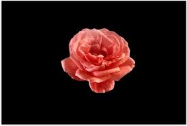

Glas schilderijen met bloemen op een diepe zwarte achtergrond creëren een dramatisch contrast en tijdloze elegantie. De levendige kleuren lijken bijna te zweven, gevangen in helder glas dat het licht vangt en de ruimte verrijkt. Perfect voor wie op zoek is naar een stijlvolle en unieke toevoeging aan het interieur.
Ons Werk
